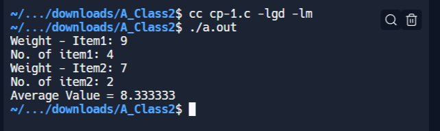
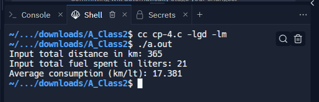
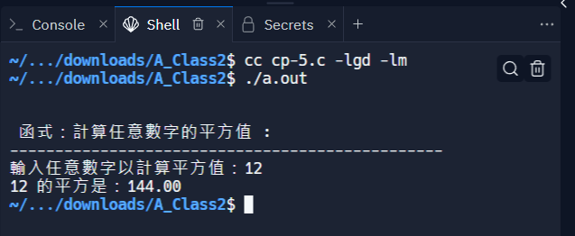
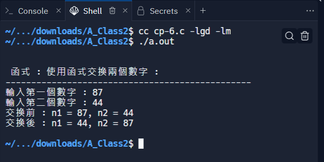
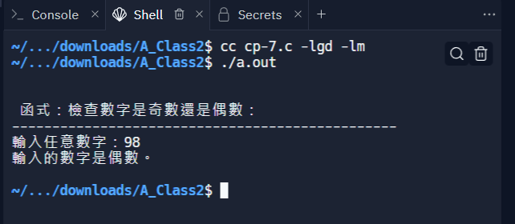
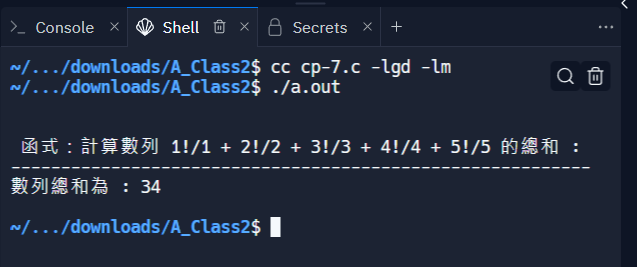
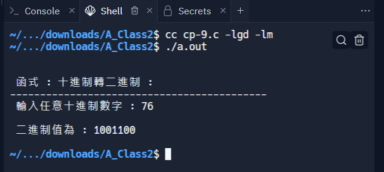
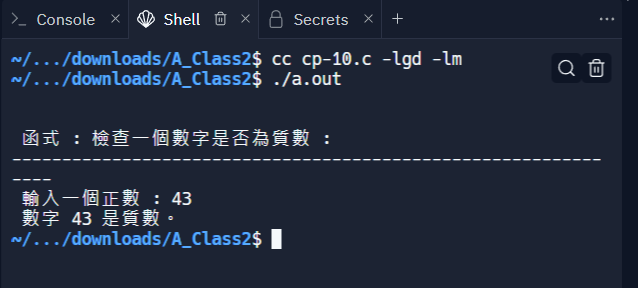

ANSIC <<
Previous Next >> EX_2
課堂內容
1.寫一個 C 程序，接受兩個商品的重量和購買數量（浮點值）併計算它們的平均值
#include <stdio.h>
int main()
{
double wi1, ci1, wi2, ci2, result; // 宣告變數表示重量和數量
// 提示使用者輸入 item 1 的重量
printf("Weight - Item1: ");
if (scanf("%lf", &wi1) != 1) { // 讀取並檢查輸入值
printf("Error: Please enter a valid number.\n"); // 如果輸入無效，輸出錯誤訊息
return 1; // 返回非零值表示程式出錯
}
// 提示使用者輸入 item 1 的數量
printf("No. of item1: ");
if (scanf("%lf", &ci1) != 1) { // 讀取並檢查輸入值
printf("Error: Please enter a valid number.\n"); // 如果輸入無效，輸出錯誤訊息
return 1; // 返回非零值表示程式出錯
}
// 提示使用者輸入 item 2 的重量
printf("Weight - Item2: ");
if (scanf("%lf", &wi2) != 1) { // 讀取並檢查輸入值
printf("Error: Please enter a valid number.\n"); // 如果輸入無效，輸出錯誤訊息
return 1; // 返回非零值表示程式出錯
}
// 提示使用者輸入 item 2 的數量
printf("No. of item2: ");
if (scanf("%lf", &ci2) != 1) { // 讀取並檢查輸入值
printf("Error: Please enter a valid number.\n"); // 如果輸入無效，輸出錯誤訊息
return 1; // 返回非零值表示程式出錯
}
// 計算平均值
result = ((wi1 * ci1) + (wi2 * ci2)) / (ci1 + ci2);
// 輸出平均值
printf("Average Value = %f\n", result);
return 0; // 返回零表示程式正常結束
}

2.寫一個 C 程序，接受員工的 ID、一個月的總工作時間、他每小時收到的金額
#include <stdio.h>
int main() {
char id[10]; // 宣告變數表示員工ID（最多10個字元）
int hour; // 宣告變數表示工作時數
double value, salary; // 宣告變數表示每小時薪水和總薪水
// 使用一個變數存儲 scanf 的返回值以避免警告
int result;
// 提示用戶輸入員工ID
printf("Input the Employees ID(Max. 10 chars): ");
result = scanf("%9s", id); // 讀取並檢查輸入的ID，限制最多讀取9個字元
if (result != 1) { // 檢查 scanf 的返回值
printf("Error: Please enter a valid Employee ID.\n");
return 1; // 返回1表示出錯
}
// ... 以下略，後續的程式碼保持不變 ...
return 0; // 返回0表示程式正常結束
}
3.寫一個 C 程序，接受三個整數並找出三個整數中的最大值
#include <stdio.h>
#include <stdlib.h>
int main()
{
int x, y, z, result, max; // 宣告變數
// 提示用戶輸入第一個整數並存儲在 'x' 中
printf("\nInput the first integer: ");
if (scanf("%d", &x) != 1) { // 檢查 scanf 的返回值
printf("Error: Please enter a valid integer.\n");
return 1; // 返回1表示出錯
}
// 提示用戶輸入第二個整數並存儲在 'y' 中
printf("\nInput the second integer: ");
if (scanf("%d", &y) != 1) { // 檢查 scanf 的返回值
printf("Error: Please enter a valid integer.\n");
return 1; // 返回1表示出錯
}
// 提示用戶輸入第三個整數並存儲在 'z' 中
printf("\nInput the third integer: ");
if (scanf("%d", &z) != 1) { // 檢查 scanf 的返回值
printf("Error: Please enter a valid integer.\n");
return 1; // 返回1表示出錯
}
// 計算結果
result = (x + y + abs(x - y)) / 2;
// 計算最大值
max = (result + z + abs(result - z)) / 2;
// 輸出最大值
printf("\nMaximum value of three integers: %d\n", max);
return 0; // 返回0表示程式正常結束
}
4.寫一個 C 程序，根據給定的總行駛距離（整數值）（以公里為單位）和用過的燃料（以公升為單位，浮點數 - 2 位小數）計算自行車的平均消耗量
#include <stdio.h>
int main()
{
int x; // 用來儲存總行駛公里數
float y; // 用來儲存總耗油量
// 提示用戶輸入總行駛公里數並存儲在 'x' 中
printf("Input total distance in km: ");
if (scanf("%d", &x) != 1) { // 檢查 scanf 的返回值
printf("Error: Please enter a valid integer.\n");
return 1; // 返回1表示出錯
}
// 提示用戶輸入總耗油量並存儲在 'y' 中
printf("Input total fuel spent in liters: ");
if (scanf("%f", &y) != 1) { // 檢查 scanf 的返回值
printf("Error: Please enter a valid float number.\n");
return 1; // 返回1表示出錯
}
// 檢查總耗油量是否為0，以避免除以0的情況
if (y == 0) {
printf("Error: Total fuel spent cannot be zero.\n");
return 1; // 返回1表示出錯
}
// 計算並輸出平均油耗
printf("Average consumption (km/lt): %.3f\n", x / y);
return 0; // 返回0表示程式正常結束
}

5.用 C 語言寫一個程序，使用函數求任意數字的平方
#include <stdio.h>
double square(double num) {
return (num * num);
}
int main() {
int num;
double n;
int scanfResult; // 變數用於儲存 scanf 的返回值
printf("\n\n 函式：計算任意數字的平方值 :\n");
printf("------------------------------------------------\n");
printf("輸入任意數字以計算平方值：");
scanfResult = scanf("%d", &num); // 將 scanf 的返回值儲存在變數中
if (scanfResult != 1) {
printf("輸入錯誤或無效的數字。\n");
return 1; // 適當的錯誤處理
}
n = square(num);
printf("%d 的平方是：%.2f\n", num, n);
return 0;
}

6.用 C 語言寫一個程序，使用函數交換兩個數字
#include<stdio.h>
void swap(int *, int *);
int main() {
int n1, n2;
int scanfResult1, scanfResult2; // 儲存 scanf 函式的返回值
printf("\n\n 函式 : 使用函式交換兩個數字 :\n");
printf("------------------------------------------------\n");
printf("輸入第一個數字 : ");
scanfResult1 = scanf("%d", &n1); // 儲存 scanf 函式的返回值
printf("輸入第二個數字 : ");
scanfResult2 = scanf("%d", &n2); // 儲存 scanf 函式的返回值
// 檢查 scanf 的返回值
if (scanfResult1 != 1 || scanfResult2 != 1) {
printf("錯誤的輸入。\n");
return 1; // 適當的錯誤處理
}
printf("交換前 : n1 = %d, n2 = %d ", n1, n2);
swap(&n1, &n2);
printf("\n交換後 : n1 = %d, n2 = %d \n\n", n1, n2);
return 0;
}
void swap(int *p, int *q) {
int tmp;
tmp = *p;
*p = *q;
*q = tmp;
}

7.使用函數檢查給定數字是偶數還是奇數
#include <stdio.h>
int checkOddEven(int n1)
{
return (n1 & 1);
}
int main()
{
int n1;
int scanfResult; // 儲存 scanf 函式的返回值
printf("\n\n 函式：檢查數字是奇數還是偶數：\n");
printf("------------------------------------------------\n");
printf("輸入任意數字：");
scanfResult = scanf("%d", &n1); // 儲存 scanf 函式的返回值
if (scanfResult != 1) {
printf("無效的輸入。\n");
return 1; // 適當的錯誤處理
}
if(checkOddEven(n1))
{
printf("輸入的數字是奇數。\n\n");
}
else
{
printf("輸入的數字是偶數。\n\n");
}
return 0;
}

8.使用函數求 1!/1+2!/2+3!/3+4!/4+5!/5 數列的和
#include <stdio.h>
int fact(int);
int main() {
int sum;
// 計算數列總和：1!/1 + 2!/2 + 3!/3 + 4!/4 + 5!/5
sum = fact(1) / 1 + fact(2) / 2 + fact(3) / 3 + fact(4) / 4 + fact(5) / 5;
printf("\n\n 函式：計算數列 1!/1 + 2!/2 + 3!/3 + 4!/4 + 5!/5 的總和 :\n");
printf("----------------------------------------------------------\n");
printf("數列總和為 : %d\n\n", sum);
return 0;
}
// 計算階乘的函式
int fact(int n) {
int num = 0, f = 1;
// 計算階乘
while (num <= n - 1) {
f = f + f * num; // 這裡的階乘計算方式可能不正確
num++;
}
return f;
}

9.使用函數將十進制數轉換為二進制數
#include<stdio.h>
long toBin(int);
int main()
{
long bno;
int dno;
int scanfResult; // 儲存 scanf 函式的返回值
printf("\n\n 函式 : 十進制轉二進制 :\n");
printf("-------------------------------------------\n");
printf(" 輸入任意十進制數字 : ");
scanfResult = scanf("%d", &dno); // 儲存 scanf 函式的返回值
if (scanfResult != 1) {
printf("輸入錯誤或無效的數字。\n");
return 1; // 適當的錯誤處理
}
bno = toBin(dno);
printf("\n 二進制值為 : %ld\n\n", bno);
return 0;
}
long toBin(int dno)
{
long bno = 0, remainder, f = 1;
while(dno != 0)
{
remainder = dno % 2;
bno = bno + remainder * f;
f = f * 10;
dno = dno / 2;
}
return bno;
}

10.使用函數檢查一個數是否為質數
#include <stdio.h>
int PrimeOrNot(int);
int main() {
int n1, prime;
int scanfResult; // 儲存 scanf 函式的返回值
printf("\n\n 函式 : 檢查一個數字是否為質數 :\n");
printf("---------------------------------------------------------------\n");
printf(" 輸入一個正數 : ");
scanfResult = scanf("%d", &n1); // 儲存 scanf 函式的返回值
// 檢查 scanf 的返回值以確保成功讀取一個整數
if (scanfResult != 1) {
printf("輸入無效。\n");
return 1; // 適當的錯誤處理
}
prime = PrimeOrNot(n1);
if (prime == 1)
printf(" 數字 %d 是質數。\n", n1);
else
printf(" 數字 %d 不是質數。\n", n1);
return 0;
}
int PrimeOrNot(int n1) {
int i = 2;
while (i <= n1 / 2) {
if (n1 % i == 0)
return 0; // 若能被除了1和自身以外的數整除，則不是質數
else
i++;
}
return 1; // 若無法被其他數整除，則是質數
}

ANSIC <<
Previous Next >> EX_2